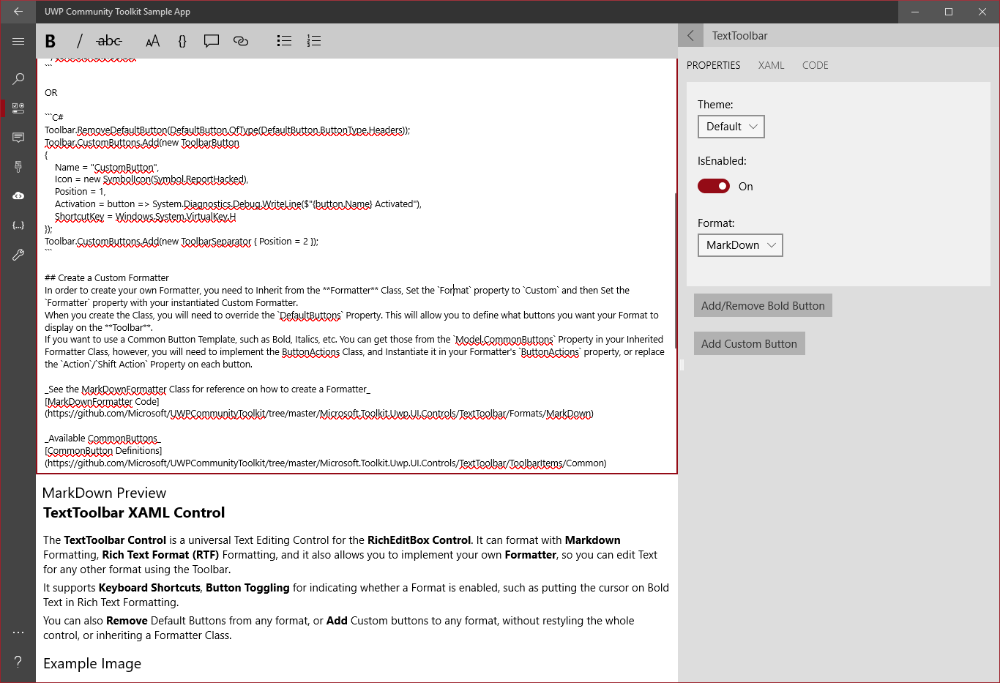

TextToolbar (Archived)
Warning
This document has been archived and the component is not available in the current version of the Windows Community Toolkit.
While there are no immediate plans to port this component to 8.x, the community is welcome to express interest or contribute to its inclusion. This control could be ported with enough community interest.
For more information:
- GitHub tracking issue for TextToolbar port
- Community Toolkit GitHub repository
- Documentation feedback and suggestions
Original documentation follows below.
The TextToolbar control is a universal Text Editing Control for the RichEditBox Control. It can format with Markdown Formatting, Rich Text Format (RTF) Formatting, and it also allows you to implement your own Formatter, so you can edit Text for any other format using the Toolbar. It supports Keyboard Shortcuts, Button Toggling for indicating whether a Format is enabled, such as putting the cursor on Bold Text in Rich Text Formatting. You can also Remove Default Buttons from any format, or Add Custom buttons to any format, without restyling the whole control, or inheriting a Formatter Class.
Syntax
<controls:TextToolbar x:Name="Toolbar" Editor="{x:Bind Editor}" Format="MarkDown"/>
<RichEditBox x:Name="Editor" PlaceholderText="Enter Text Here" />
Sample Output

Properties
| Property | Type | Description |
|---|---|---|
| ButtonModifications | DefaultButtonModificationList | Gets or sets a list of Default buttons to remove from the UI |
| ControlKeyDown | bool | Gets a value indicating whether Control is pressed down |
| CustomButtons | ButtonMap | Gets or sets a list of buttons to add to the Default Button set |
| DefaultButtons | ButtonMap | Gets the default buttons for this format |
| Editor | RichEditBox | Gets or sets the RichEditBox to Attach to, this is required for any formatting to work |
| Format | Format | Gets or sets which formatter to use, and which buttons to provide |
| Formatter | Formatter | Gets or sets the formatter which is used to format the text from the buttons |
| LastKeyPress | VirtualKey | Gets the last key pressed using the Editor |
| ShiftKeyDown | bool | Gets a value indicating whether Shift is pressed down |
| UseURIChecker | bool | Gets or sets a value indicating whether to enable use of URI Checker for Link Creator. This allows you to verify Absolute URIs, before creating the Link |
Create a Custom Formatter
In order to create your own Formatter, you need to Inherit from the Formatter Class. Then on the TextToolbar, Set the Format property to Custom and then Set the Formatter property with your instantiated Custom Formatter.
When you create the Class, you will need to override the DefaultButtons Property. This will allow you to define what buttons you want your Format to display on the Toolbar.
If you want to use a Common Button Template, such as Bold, Italics, etc. You can get those by Instantiating a CommonButtons Instance in your Formatter Class, however, you will need to implement the ButtonActions Class, and Instantiate it in your Formatter's ButtonActions property, or replace the Action/Shift Action Property on each button you use.
See the MarkDownFormatter Class for reference on how to create a Formatter: MarkDownFormatter Code
See the Sample Formatter Class from the Sample App: SampleFormatter Code
Available CommonButtons: CommonButton Definitions
Examples
Example of adding Add/Remove Buttons
<controls:TextToolbar x:Name="Toolbar" Editor="{x:Bind Editor}">
<controls:TextToolbar.ButtonModifications>
<buttons:DefaultButton Type="Headers" IsVisible="False"/>
</controls:TextToolbar.ButtonModifications>
<controls:TextToolbar.CustomButtons>
<buttons:ToolbarButton
Name="CustomButton"
Icon="ReportHacked"
Position="1"
Activation="{x:Bind System.Action<ToolbarButton>}"
ShortcutKey="H" />
<buttons:ToolbarSeparator Position="2" />
</controls:TextToolbar.CustomButtons>
</controls:TextToolbar>
<RichEditBox x:Name="Editor" PlaceholderText="Enter Text Here" />
var button = Toolbar.GetDefaultButton(ButtonType.Headers);
button.Visibility = Windows.UI.Xaml.Visibility.Collapsed;
Toolbar.CustomButtons.Add(new ToolbarButton
{
Name = "CustomButton",
Icon = new SymbolIcon(Symbol.ReportHacked),
Position = 1,
Activation = button => System.Diagnostics.Debug.WriteLine($"{button.Name} Activated"),
ShortcutKey = Windows.System.VirtualKey.H
});
Toolbar.CustomButtons.Add(new ToolbarSeparator { Position = 2 });
Dim button = Toolbar.GetDefaultButton(ButtonType.Headers)
button.Visibility = Windows.UI.Xaml.Visibility.Collapsed
Toolbar.CustomButtons.Add(New ToolbarButton With {
.Name = "CustomButton",
.Icon = New SymbolIcon(Symbol.ReportHacked),
.Position = 1,
.Activation = Sub(btn) Debug.WriteLine($"{btn.Name} Activated"),
.ShortcutKey = Windows.System.VirtualKey.H})
Toolbar.CustomButtons.Add(New ToolbarSeparator With {.Position = 2})
Sample Project
TextToolbar Sample Page Source. You can see this in action in Windows Community Toolkit Sample App.
Requirements
| Device family | Universal, 10.0.16299.0 or higher |
|---|---|
| Namespace | Microsoft.Toolkit.Uwp.UI.Controls |
| NuGet package | Microsoft.Toolkit.Uwp.UI.Controls |